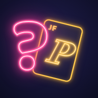

Perfil JF
Embaralhando as cartas…
🎲
Perfil JF
Quantas dicas você vai precisar pra descobrir quem eu sou?
Preparando as cartas…
(•‿•)Oi!
🚀 Beta 1.7.9.9 · Rooms and Network Update · Regras da sala
C.A.O.S. 4.0 · Atualizada em 10/10/2026
🎲
Escolha o modo
Cada modo tem seu próprio ritmo e regras
📻 Como a mesa prefere jogar?
🎲
Perfil JF
Cartas de Ano, Pessoa, Lugar e Coisa
⚡ Resumo rápido ⚡
📋 Ver regras completas
Jogo pausado
O tempo está congelado. Ninguém perde nada enquanto isso.
⏸️ O jogo pausou sozinho porque a tela saiu de foco. O tempo está parado — toque em "Voltar pro jogo" quando todo mundo estiver olhando.
💡 Dica de jogo
⚙️ Mais opções
📋 Resumo das regras desta partida
🎲 Perfil JF
Modo—
Jogadores
🤖 C.A.O.S. · modo iniciante
🤖 O C.A.O.S. sugere:
🎨 Cor
😀 Emoji
🎭 Zoeira
Como o C.A.O.S. pode zoar esse jogador?
Faixa etária (equilibra os times no sorteio; 6-12 ganha tempo extra quando for o Mestre):
Idade (opcional · com menos de 12, ganha tempo extra pra ler quando for o Mestre)
Quantas equipes?
4 jogadores: 2 equipes de 2 · 6 jogadores: 2 equipes de 3 ou 3 equipes de 2
Como vai funcionar a resposta?
🎲 Ordem de jogo definida!
Carregando baralho...
Aperte "Sortear carta" para começar